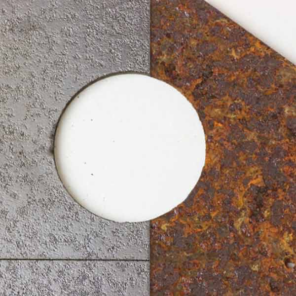
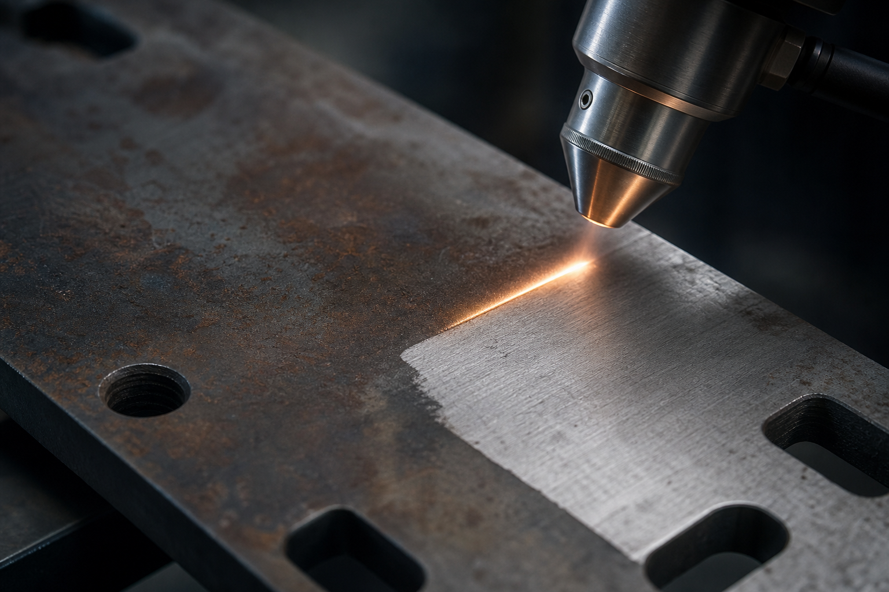
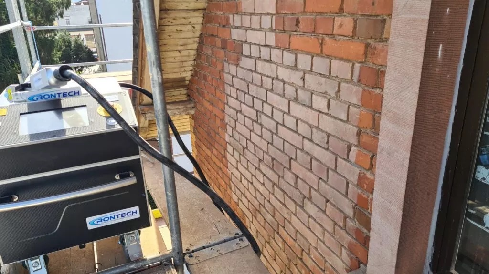
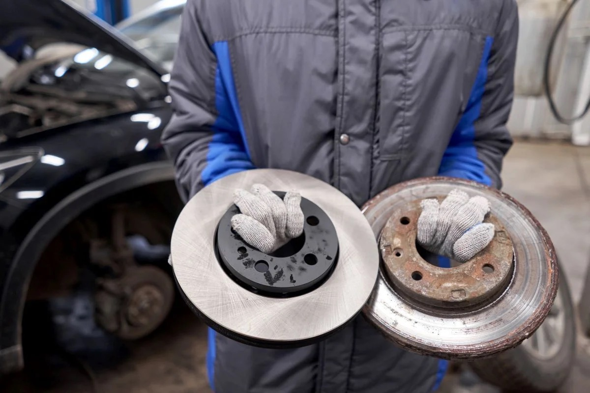
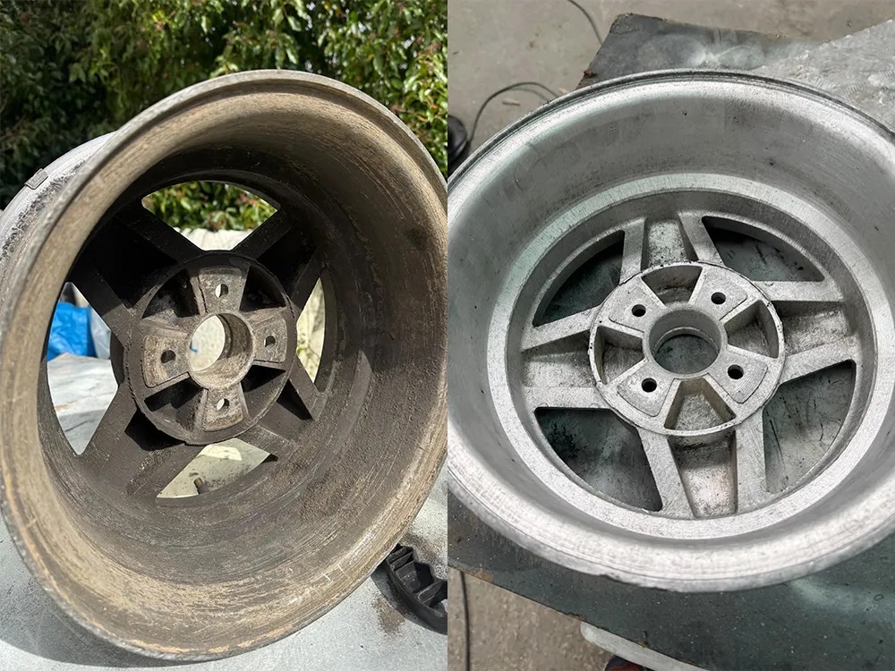
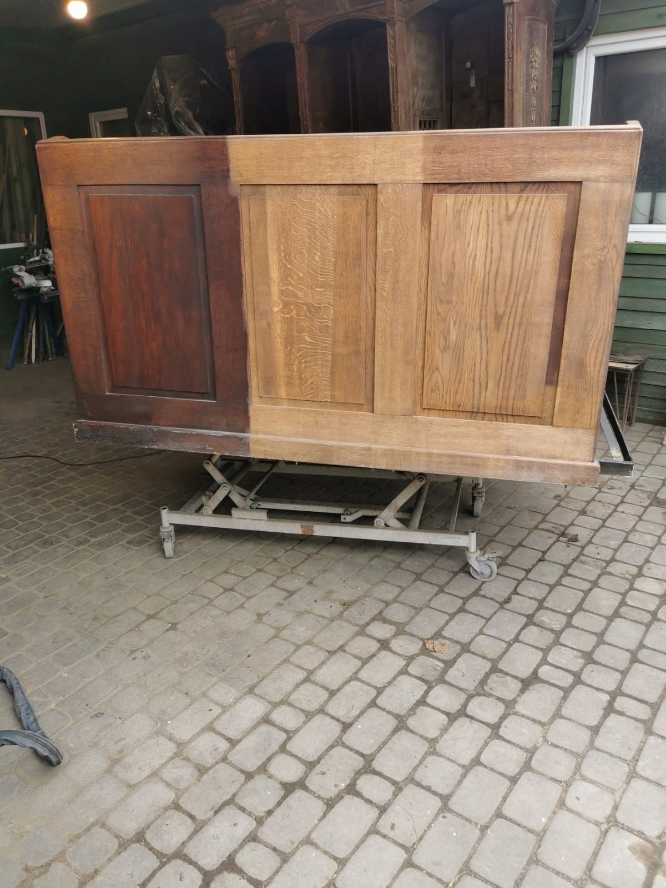
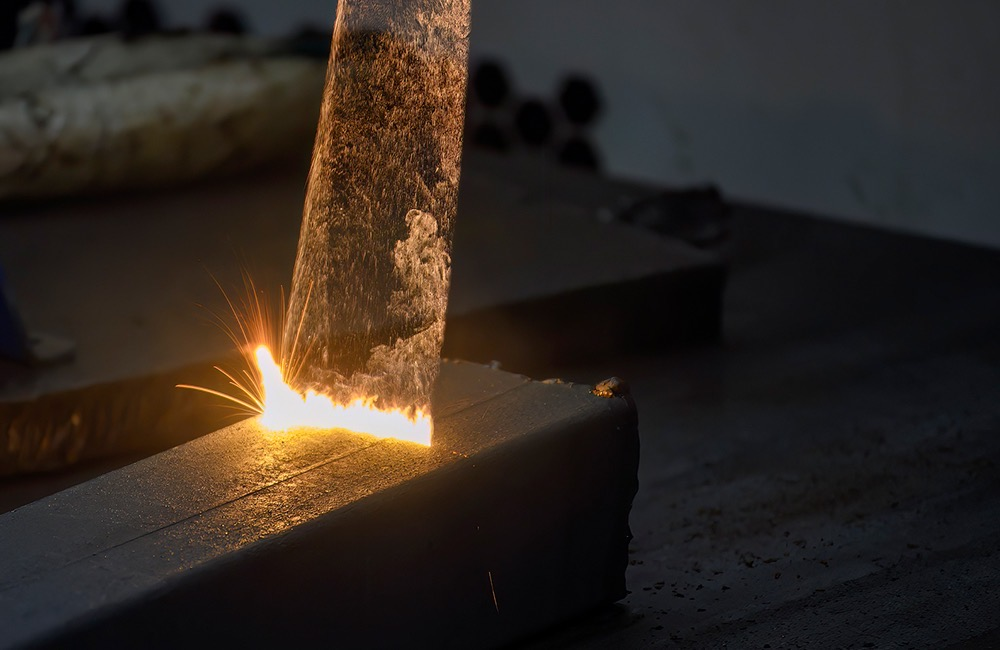
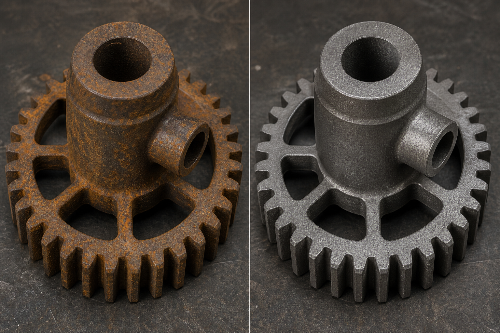
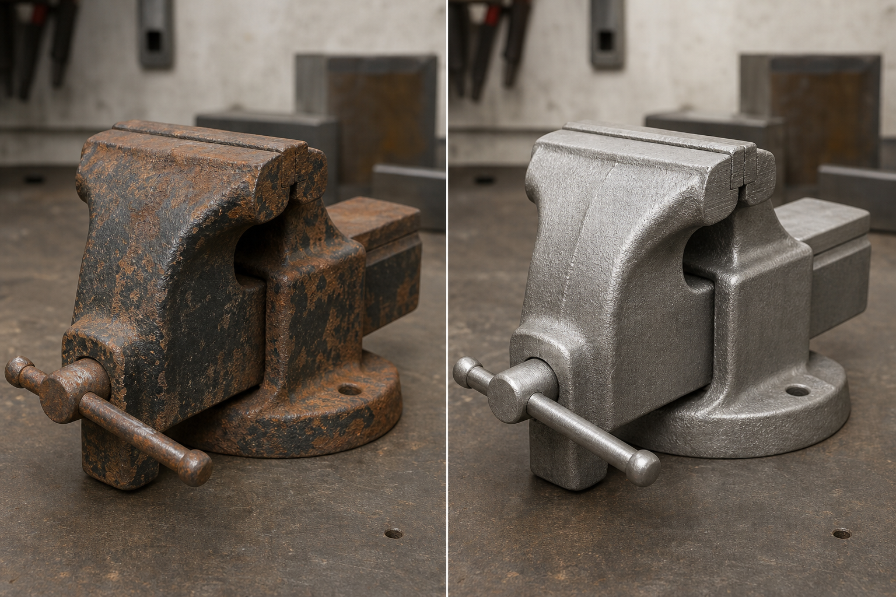
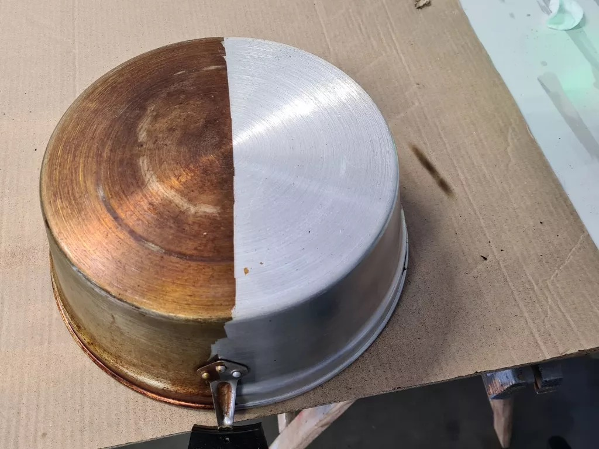

Laserowe czyszczenie Precyzja, która przywraca idealną czystość
Usuwamy rdzę, farbę, olej, smar i inne zanieczyszczenia bez uszkodzenia powierzchni. Szybko, skutecznie i ekologicznie.
Bez chemii i środków ściernych
Bezpieczne dla powierzchni
Ekologiczne i bezodpadowe
Precyzyjne i skuteczne
Zastosowania

Powierzchnie metalowe

Cegła, klinkier i elewacje

Tarcze i detale samochodowe

Felgi i elementy aluminiowe

Drewno, meble i stare lakiery
Co to jest laser i jak działa?
Laser to skoncentrowana wiązka światła o wysokiej energii, która po skierowaniu na powierzchnię usuwa zanieczyszczenia bez naruszania materiału bazowego.
Proces jest bezdotykowy, precyzyjny i całkowicie bezpieczny dla czyszczonej powierzchni oraz środowiska.
- Nie wymaga chemikaliów ani środków ściernych
- Idealny do delikatnych i trudno dostępnych miejsc
- Szybkie efekty bez przygotowania powierzchni
- Minimalne odpady i ekologiczne rozwiązanie
Zasada działania lasera

- Wiązka lasera
- Warstwa zanieczyszczeń
- Materiał bazowy
- Odparowane zabrudzenia
Efekt czyszczenia
Przed
Po
Jak pracujemy?
Kontakt
Skontaktuj się z nami telefonicznie lub przez formularz.
Wycena
Przygotujemy darmową wycenę w ciągu 24h.
Dojazd
Przyjeżdżamy na miejsce i zabezpieczamy obszar pracy.
Czyszczenie laserem
Usuwamy zanieczyszczenia szybko i bezpiecznie.
Efekt
Czysta powierzchnia jest gotowa do dalszego użycia.
Otrzymaj darmową wycenę w 30 sekund
- Szybko i bez zobowiązań
- Odpowiadamy w ciągu 24h
- Najlepsza cena na rynku
Dlaczego warto nas wybrać?
Nowoczesna technologia
Laser światłowodowy o wysokiej mocy.
Doświadczeni specjaliści
Setki realizowanych projektów w Polsce i za granicą.
Dojazd na terenie całej Polski
Przyjeżdżamy do klienta w dogodnym terminie.
Gwarancja jakości
Gwarantujemy bezpieczeństwo i skuteczność czyszczenia.
Ekologiczne rozwiązanie
Bez chemii, bez wody i bez odpadów wtórnych.
Realizacje

Przed Po
Przed Po
Przed Po
500+
Zrealizowanych projektów
98%
Zadowolonych klientów
5 lat
Doświadczenia w czyszczeniu laserem
100%
Ekologiczne i bezpieczne
Cała Polska
Dojazd do klienta w 24/48h
Opinie klientów
Laser Clean to profesjonalizm i skuteczność. Rdza zniknęła bez uszkodzeń.
★★★★★
Szybko, czysto i bez uszkodzeń. Najlepsza firma w branży.
★★★★★
Polecam, świetny kontakt, terminowość i perfekcyjny efekt końcowy.
★★★★★
Najczęściej zadawane pytania
Czyszczenie laserowe to bezkontaktowa metoda usuwania brudu, rdzy i farby za pomocą skoncentrowanej wiązki światła. Laser silnie nagrzewa i odparowuje zanieczyszczenia, nie uszkadzając materiału pod spodem.
Tak, czyszczenie laserowe jest w pełni bezpieczne dla czyszczonej powierzchni. Jest to metoda bezkontaktowa, która nie powoduje uszkodzeń mechanicznych.
- Brak ścierania: nie rysuje metalu jak piaskowanie.
- Selektywność: laser reaguje tylko z brudem i rdzą.
- Odbicie światła: czyste podłoże odbija promień lasera.
- Brak chemii: nie powoduje korozji chemicznej materiału.
- Kontrola termiczna: krótkie impulsy nie przegrzewają detali.
Laserem można bezpiecznie czyścić większość twardych i odpornych na temperaturę materiałów.
- Stal i żeliwo: rdza, zendra i stare powłoki malarskie.
- Metale kolorowe: aluminium, miedź i mosiądz.
- Kamień naturalny: granit, marmur i piaskowiec.
- Cegła i klinkier: osady, sadza oraz graffiti.
- Kompozyty, Kevlar, drewno, szkło i ceramika.
Tak, czyszczenie laserowe to jedna z najbardziej ekologicznych metod czyszczenia przemysłowego. Nie generuje szkodliwych odpadów i nie zatruwa środowiska.
- Zero chemii: bez toksycznych rozpuszczalników i kwasów.
- Brak odpadów wtórnych: bez ton brudnego piasku i zużytej wody.
- Niskie zużycie zasobów: proces wymaga tylko prądu.
- Łatwa filtracja: odparowany brud trafia do filtrów odciągowych.
- Długa żywotność: urządzenia nie zużywają materiałów eksploatacyjnych.
Gotowy na czysty efekt?
Skontaktuj się z nami i przekonaj się, jak działa laserowe czyszczenie.